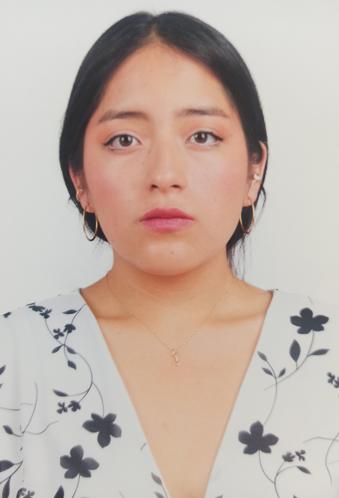

|
 Danna AndradeSoftware Engineering Student Personal InformationFull Name: Danna Valentina Andrade Lucio Date of Birth: June 15, 2005 Residence: Conocoto Marital Status: Single Contact InformationInstitutional Email: daandrade9@espe.edu.ec Personal Email: andrade.dval@gmail.com Phone: +593 939185134 GitHub: Danna Andrade GitHub Languages
Hobbies
Soft Skills
|
Professional ProfileSoftware Engineering student at the Universidad de las Fuerzas Armadas ESPE, interested in software development, data analysis, and emerging technologies. Proactive, responsible, and capable of working effectively in a team. Academic InformationBasic Education: High School Education: University Education: Languages: Technical Skills
Work ExperienceI do not yet have formal work experience, but I have personal entrepreneurship experience that has strengthened my skills. Independent Experience
|